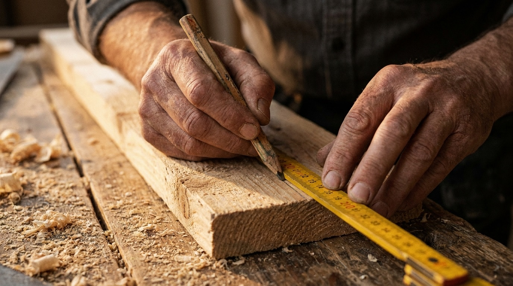

Wat wil je laten maken?
Kies wat in de buurt komt. Je ziet wat Maarten eerder voor klanten maakte. Staat jouw klus er niet bij? Bel gewoon even.
Een tuinhuis, in de tuin gebouwd
Maarten bouwde voor een klant een geïsoleerd tuinhuis van 5 meter, ter plekke in de tuin. Hij dacht mee, gaf goed advies en leverde het zoals afgesproken.
Bel en vertel wat je wiltZo werkt Maarten
Hij vraagt wat je wilt
Eerst luisteren. Klanten zeggen: hij vraagt wat je wilt en levert het ook zo.
Advies en meedenken
Goed advies, en hij denkt mee over hoe het het beste kan.
Vakwerk
Een echte vakman, betrouwbaar, voor een eerlijke prijs.
Nazorg
Moet er na het plaatsen iets bijgesteld worden, zoals een poort? Dan komt hij terug.

IllustratieWat klanten zeggen
Een dikke 10, vindt een klant. 5,0 uit 10 Google-reviews.
- Een echte vakman
- Vraagt wat je wilt en levert het zo
- Goed advies, denkt mee
- Betrouwbaar, eerlijke prijs
- Goede nazorg
Samengevat uit reviews op Google.
Even vragen
Maak je ook een zolder af?
Ja. Maarten maakte voor een klant van een zolder een slaapkamer met een aparte technische ruimte.
Bouw je een tuinhuis in de tuin zelf?
Ja. Hij bouwde een geïsoleerd tuinhuis van 5 meter, gewoon in de tuin van de klant.
En als er na afloop iets niet goed sluit?
Dan komt hij terug. Klanten noemen de nazorg goed; zo stelde hij een poort na het plaatsen nog bij.
Wat kost het?
Dat hangt van de klus af. Klanten noemen de prijs eerlijk. Bel en vertel wat je wilt, dan hoor je wat het kost.
Doe je ook deuren, kozijnen of vloeren?
Vraag het gewoon even aan de telefoon: 06 43204136.